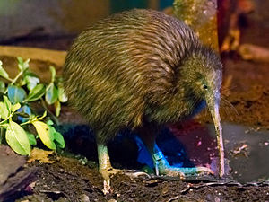

Kiwis leben auf den drei großen Inseln Neuseelands: Nordinsel, Südinsel und Stewart Island. Es gibt sie außerdem auf zahlreichen kleinen Inseln vor den Küsten Neuseelands; auf den meisten von ihnen sind sie aber mit Sicherheit, auf den übrigen mit hoher Wahrscheinlichkeit durch den Menschen eingeführt worden. Das ursprüngliche Habitat der Kiwis waren die Wälder, die mit Ausnahme der Hochgebirge Neuseeland vor der Ankunft polynesischer Siedler nahezu lückenlos bedeckten. Heute sind sie auch in den künstlich entstandenen, strauchbestandenen offenen Geländen heimisch. Sie gehören außerdem zu den äußerst wenigen einheimischen Tieren, die sich in den von den Europäern angepflanzten Nadelbaummonokulturen ansiedeln konnten. Allerdings sind Kiwis trotz ihrer Anpassungsfähigkeit durch den Jagddruck durch eingeschleppte Raubtiere aus zahlreichen Regionen verschwunden und nur noch lückenhaft über Neuseeland verbreitet. Im Gebirge gibt es Kiwis bis in Höhen von 1200 Metern. Alle Kiwis brauchen Habitate mit hohem Grad an Feuchtigkeit und lockerem, humusreichem Boden.
The main diet of a kiwi bird is earthworms, insects (beetles, larvae), arachnids, seeds, fruits, snails and crayfish.
The kiwi bird males make a "kee wee kee wee" sound. Kiwis birds are nocturnal. They can find food in the dark because of their extraordinary sense of smell. Kiwi birds do not build nests; they dig burrows inside of the ground where they live and lay eggs. They are shy by nature, and come out of their burrows at night to feed. The female kiwi bird consumes up to three times as much food because of the large egg she lays. The young ones stay in the burrow only for ten days after they hatch. The birds prefer to stay away from human habitat. The mating season is from March to June. The male and female prefer to live together for a long time (approximately 20 years). They are very vulnerable, so they mostly hide in the bushes, and will usually use their three-toed feet when attacking or defending themselves from enemies.
?? What I like about this animal